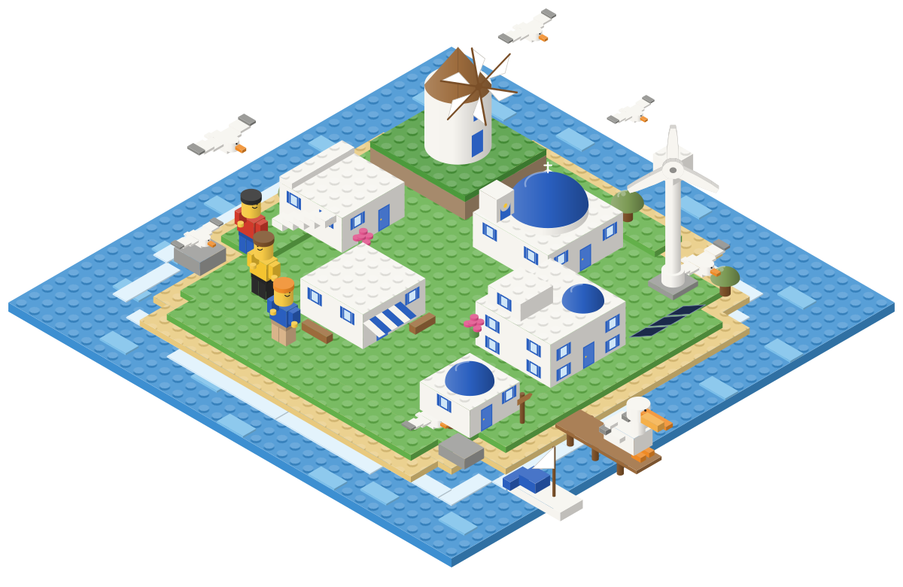

PhD researcher · TRÊS, University of Groningen
Modelling complex systems: eco-evolutionary dynamics, community assembly and regime shifts, with applications to sustainability and socioeconomic systems.
